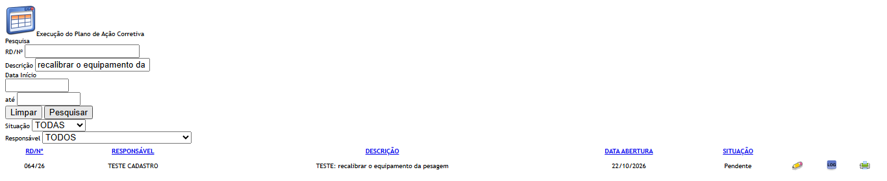
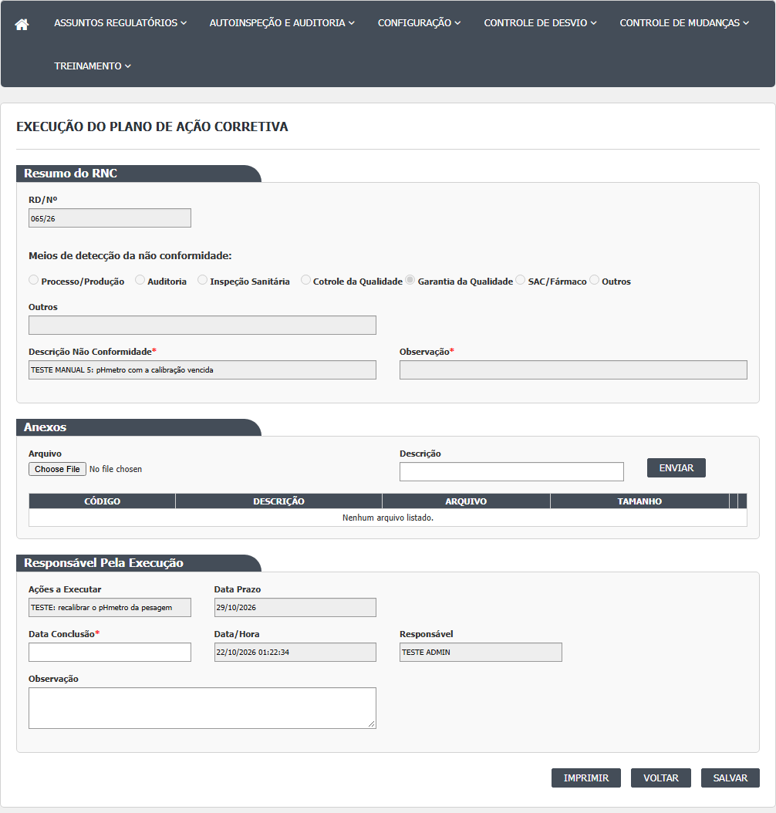
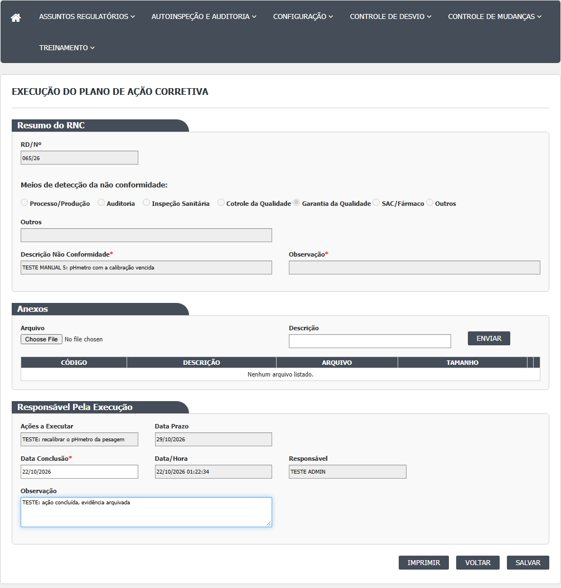
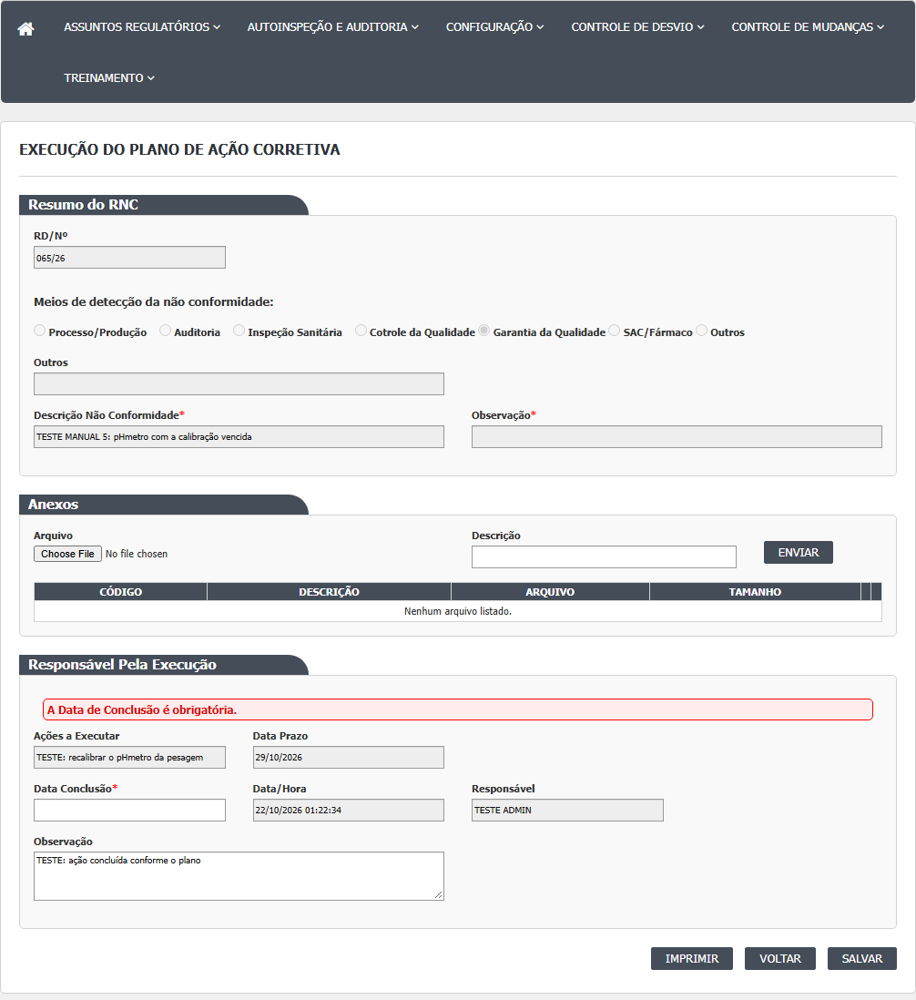
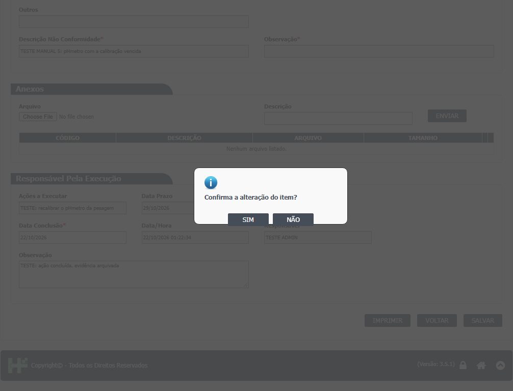
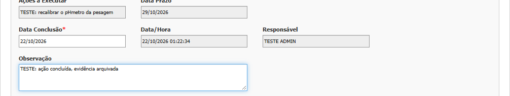
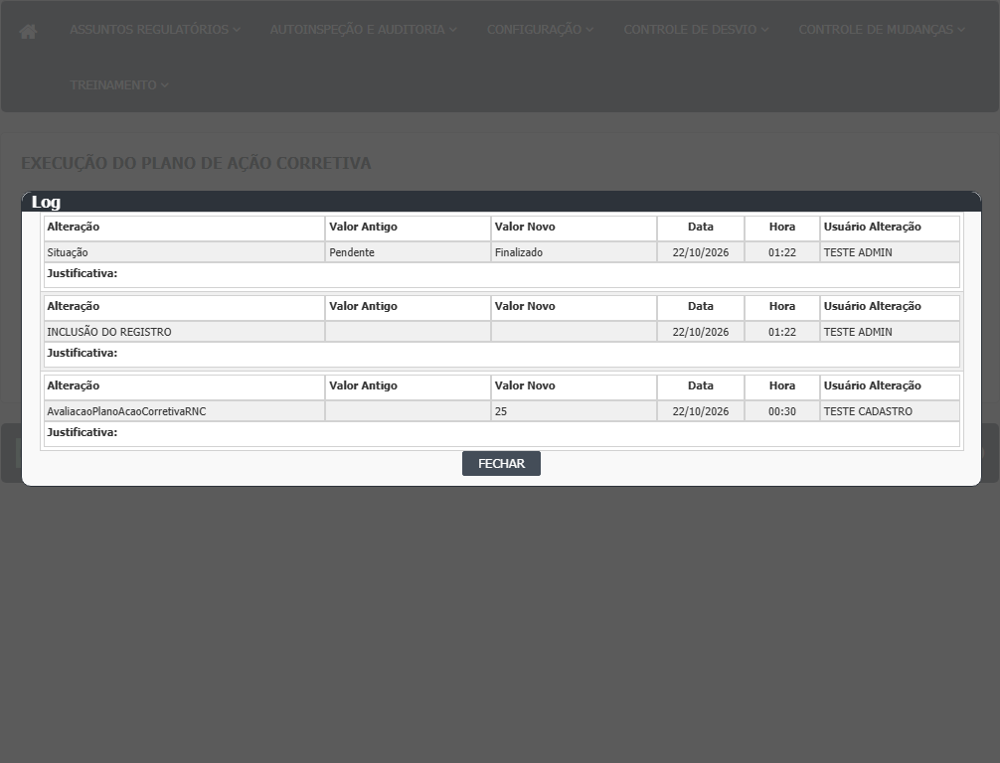

Antes de começar
Você precisa ter sido indicado como responsável por uma ação no plano de ação corretiva do desvio, e o plano precisa ter sido salvo pela Garantia da Qualidade. Reúna a data em que a ação foi concluída e, se houver, os documentos que provam a execução (para anexar).
Tela de lista (Index)
- Passo 1. No menu, abra Controle de Desvios › Execução do Plano de Ação Corretiva. A tela mostra o quadro "Pesquisa" e uma área vazia para os resultados. Clique em Pesquisar para listar.
- Passo 2. Filtros disponíveis: RD/Nº, Descrição (da ação), Data Início e Data Fim (calendário, formato dd/mm/aaaa), Situação (Pendente ou Finalizado) e Responsável. A lista só traz as ações em que você é o responsável, mesmo que escolha outra pessoa no filtro Responsável. Limpar esvazia os filtros e a lista.
- Passo 3. A lista tem uma linha por desvio, com RD/Nº, Responsável, Descrição (da ação), Data Abertura (do desvio) e Situação (da ação). Cada linha tem os ícones Editar (lápis), Histórico, Imprimir e, quando o lápis não está disponível, Visualizar.
- Passo 4. Se nada for encontrado: "A pesquisa não retornou nenhum resultado."
- Passo 5. Clique no lápis para executar a ação. Se o lápis não aparece (o desvio já foi aprovado ou reprovado, por exemplo), use Visualizar.

Tela de execução (Editar)
- Passo 6. Bloco "Resumo do RNC": só leitura, com o número do desvio, como foi detectado, a descrição da não conformidade e a observação do desvio.
- Passo 7. Bloco "Anexos" (opcional): escolha o arquivo, escreva a Descrição do anexo (obrigatória) e clique em Enviar. A mensagem "Arquivo enviado com sucesso." confirma. O anexo só fica gravado ao clicar em Salvar no fim.
- Passo 8. Bloco "Responsável Pela Execução": veja "Ações a Executar" (o texto da ação) e "Data Prazo", ambos travados. Preencha a Data Conclusão (obrigatória, dd/mm/aaaa, não pode ser depois de hoje) e, se quiser, a Observação. Data/Hora e Responsável (você) são só leitura.
- Passo 9. Clique em Salvar. O sistema pergunta "Confirma a alteração do item?". NÃO volta sem gravar.
- Passo 10. Se a data estiver vazia ou no futuro, a tela mostra a mensagem em faixa vermelha no bloco e nada é gravado. Visto na rodada 1 (21/10/2026): data vazia mostra "A Data de Conclusão é obrigatória." (CT-GQ-N08-01); data de amanhã mostra "A Data de Conclusão não pode ser maior que a data atual."; a de hoje é aceita (CT-GQ-020).
- Passo 11. Se estiver certo, aparece "Alteração efetuada com sucesso.", os campos ficam travados, o botão Salvar some e a ação passa para Finalizado. O desvio continua no mesmo ponto. Na rodada 1, uma ação com prazo vencido há 3 dias foi concluída com a data de hoje sem nenhum aviso de atraso (CT-GQ-N08-04, DV-GQ-025).
- Passo 12. Clique em Voltar para retornar à lista. Para ver quem executou e quando, use o ícone Histórico da linha.





Reabrir uma ação já finalizada
Enquanto o desvio estiver em Pendente Monitoramento, o lápis continua disponível. Dá para abrir a ação de novo, mudar a data ou a observação e salvar outra vez. O sistema não pede justificativa. Atenção: a Observação que você digitou pode não aparecer ao reabrir (ver Falhas e pontos de atenção). Confirmado na rodada 1 (21/10/2026): ao reabrir a ação finalizada, a Observação vem vazia (a data volta preenchida) (CT-GQ-N08-05, DV-GQ-024); mudar a data (um dia antes) e a observação foi aceito sem justificativa, e o histórico da ação mostra o valor antigo e o novo, com a justificativa vazia (CT-GQ-N08-06, DV-GQ-025).
Outras opções
- Imprimir: abre o relatório de CAPA do desvio, em outra aba.
- Visualizar: mesma tela com tudo travado e só Imprimir e Voltar.

Rodada 2 (22/10/2026)
- Histórico da ação (ícone Histórico da linha), ação 2 do desvio 041/26 (CT-GQ-N08-07). Antes de concluir, o histórico abre vazio, com a mensagem "A pesquisa não retornou nenhum resultado.". Depois de concluir, mostra a inclusão da avaliação, a mudança de situação da ação de Pendente para Finalizado, o usuário e a data. A inclusão não traz valor antigo.
- A situação da ação concluída aparece como "Finalizado", e não "Concluido".
Rodada 3 (22/10/2026)
Fonte: execucao/2026-10-22-desvios-rodada-3b/resultado.md. Visto nos testes (desvios 078/26, 080/26 e 084/26).
- Data de Conclusão: o campo aceita digitar uma data impossível (31/02/2026, 00/00/0000), mas ao Salvar ela é recusada com "A Data de Conclusão é obrigatória." (a mensagem não diz que a data é inválida). Letras não entram. Data no padrão errado ("2026-10-21") vira "20/26/1021" e é recusada do mesmo jeito.
- Atenção: "21/10/26" (ano com dois dígitos) é aceito e gravado como 21/10/2026, e conclusões em 01/01/1900 ou um dia antes da abertura do desvio também são aceitas, sem aviso (DV-GQ-070 e DV-GQ-071).
- Quem é responsável por duas ações do mesmo desvio vê uma única linha na lista (a ação 1). Depois de finalizar a ação 1, a pesquisa TODAS continua mostrando a ação 1 como Finalizado; a ação 2 só aparece com o filtro Pendente (DV-GQ-073).
- Com todas as ações finalizadas, o desvio continua em Pendente Monitoramento do Plano Ação Corretiva e, no Monitoramento, as ações aparecem como Finalizado e surge o botão Aprovar.
- Desvio já em Aprovado Plano Ação Corretiva: as ações aparecem na lista só com o ícone Visualizar, mais Histórico e Imprimir.
- Anexo: sem descrição, o sistema diz "A descrição não foi informada."; com descrição, "Arquivo enviado com sucesso."; Excluir tira o anexo da grade. O anexo mantido ao salvar não aparece depois no Monitoramento do mesmo plano ("Nenhum arquivo listado.", DV-GQ-074).
Rodada 4 (22/10/2026)
Fonte: execucao/2026-10-22-desvios-rodada-4/resultado.md. Visto nos testes (desvios 038/26, 039/26 e 066/26).
- Visualizar de uma ação finalizada, com o desvio em Aprovado Plano Ação Corretiva (CT-GQ-N08-13, desvio 066/26): a tela abre toda travada, só com Imprimir e Voltar. O campo Responsável mostra o responsável da ação.
- Observação (CT-GQ-N08-15, desvio 038/26, DV-GQ-088): um texto de 5 000 caracteres, com aspas, sinais de menor e maior e "e" comercial, é aceito com "Alteração efetuada com sucesso.", mas ao reabrir a ação a Observação está vazia e o texto também não sai no PDF. A data de conclusão foi guardada. Quem escreve não é avisado de que a observação se perdeu.
- Ação removida no plano (CT-GQ-N08-16, desvio 039/26): em um plano com duas ações, a que foi removida antes de salvar não aparece na Execução; só a que ficou (a busca pelo texto da removida acha 0).
- Imprimir (CT-GQ-N08-21, desvio 038/26), pela lista e pela tela: abre o PDF "RELATÓRIO DE CAPA" com a ação, mas com uma mensagem de erro do relatório no lugar da avaliação (DV-GQ-086).
Campos da tela
Caminhos das fontes na seção Resumo da tela. "Sim (servidor)" quando o servidor também recusa.
| Campo na tela | Tipo | Obrigatório | Regra, limite ou valores possíveis | Fonte |
|---|---|---|---|---|
| Quadro Pesquisa: RD/Nº | Texto, sem máscara | Não | Procura o texto no número sequencial do desvio (contém). Como o sequencial é gravado sem o ano ("005"), digitar "005/26" não acha nada. Confirmado em 21/10/2026: o número puro acha, o número com o ano não (CT-GQ-F05 e CT-GQ-F06, DV-GQ-026) | Index.cshtml:24; AvaliacaoPlanoAcaoCorretivaRNCController.cs:88-89 |
| Quadro Pesquisa: Descrição | Texto | Não | Descrição da ação (não a do desvio) contém o texto. Confirmado em 21/10/2026: filtra pela descrição da ação | Index.cshtml:30; AvaliacaoPlanoAcaoCorretivaRNCController.cs:109-110 |
| Quadro Pesquisa: Data Início | Texto com calendário, máscara 99/99/9999 | Não | Sozinha: só desvios abertos naquele dia. Com a Data Fim: abertos entre as duas datas (Data Fim vale 00:00). Rodada 1 (21/10/2026): só com a Data Início de hoje a lista trouxe 17 linhas; com início e fim no mesmo dia, 0 linhas (CT-GQ-F08, DV-GQ-027). Data inválida (31/02/2026) é ignorada em silêncio (CT-GQ-F09) | Index.cshtml:36; AvaliacaoPlanoAcaoCorretivaIndex.js:3-4; AvaliacaoPlanoAcaoCorretivaRNCController.cs:112-127 |
| Quadro Pesquisa: Data Fim (até) | Texto com calendário, máscara 99/99/9999 | Não | Ver Data Início | Index.cshtml:40; AvaliacaoPlanoAcaoCorretivaIndex.js:5-6 |
| Quadro Pesquisa: Situação | Lista | Não | TODAS, Pendente ou Finalizado (situação da ação) | Index.cshtml:50-56; AvaliacaoPlanoAcaoCorretivaIndexModel.cs:45-52; TipoSituacao.cs:17-20 |
| Quadro Pesquisa: Responsável | Lista de usuários | Não | TODOS ou um usuário do Principal. Não tem efeito prático: a lista só traz ações do usuário conectado | Index.cshtml:60; AvaliacaoPlanoAcaoCorretivaRNCController.cs:132-135 |
| Grade de resultados | Tabela paginada | Não | Colunas RD/Nº, Responsável, Descrição, Data Abertura, Situação (e Id, IdRnc e IdAvaliacao, ocultas). Uma linha por desvio. Ícones: Editar, Histórico, Visualizar, Imprimir | AvaliacaoPlanoAcaoCorretivaIndex.js:34-58 |
| hfId | Oculto | Sim | Número interno do desvio | Editar.cshtml:46 |
| RD/Nº, Meios de detecção, Outros, Descrição Não Conformidade, Observação (Resumo do RNC) | Texto e 7 botões de opção, travados | Não se aplica | Mesmo resumo do desvio das outras telas do plano ("Cotrole da Qualidade" tem erro de digitação) | _PartialRegistroNC.cshtml:12-103 |
| Arquivo (anexo) | Arquivo | Sim (servidor), para enviar | Sem lista de tipos e sem limite de tamanho no código | _UploadArquivo.cshtml:76; UploadController.cs:55-60 e 125-130 |
| Descrição (anexo) | Texto | Sim (servidor), para enviar | "A descrição não foi informada." se vazio | _UploadArquivo.cshtml:82; UploadController.cs:129 |
| Grade de anexos | Tabela | Não | CÓDIGO, DESCRIÇÃO, ARQUIVO, TAMANHO; ícones Excluir e Abrir. Vazia: "Nenhum arquivo listado." | _GridAnexos.cshtml:6-31 |
| Acao-Id | Oculto | Sim | Número da ação sendo executada | Editar.cshtml:98 |
| Ações a Executar | Texto, travado | Não se aplica | Descrição da ação, como o plano gravou | Editar.cshtml:101 |
| Data Prazo | Texto, travado | Não se aplica | Prazo da ação, em dd/mm/aaaa | Editar.cshtml:105 |
| Data Conclusão | Texto com calendário, máscara 99/99/9999 | Sim (tela e servidor) | Data real de conclusão. Vazia: "A Data de Conclusão é obrigatória." Depois de agora: "A Data de Conclusão não pode ser maior que a data atual." Hoje à 00:00 vale. Não é comparada ao prazo. Confirmado em 21/10/2026: vazia, amanhã e hoje se comportam como descrito (CT-GQ-N08-01 e CT-GQ-020); prazo vencido aceito sem aviso e regravação com outra data aceita (CT-GQ-N08-04 e N08-06, DV-GQ-025) | Editar.cshtml:111; AvaliacaoPlanoAcaoCorretivaSalvar.js:77-78; AvaliacaoPlanoAcaoCorretivaValidator.cs:26-38 |
| Data/Hora | Texto, travado | Não se aplica | Mostra a data e hora de abertura da tela (ou a da execução anterior). O valor é devolvido ao servidor e gravado como data da avaliação | Editar.cshtml:79, 87 e 115; AvaliacaoPlanoAcaoCorretivaSalvar.js:101; AvaliacaoPlanoAcaoCorretivaRNCController.cs:269 |
| Responsável | Texto, travado | Não se aplica | Nome de quem está conectado, mesmo ao visualizar a execução de outra pessoa | Editar.cshtml:119; AvaliacaoPlanoAcaoCorretivaRNCController.cs:209 e 484 |
| Observação | Texto longo (4 linhas) | Não | Sem limite de tamanho. Ao reabrir, a tela lê o texto da coluna Justificativa, e não da coluna Observação onde ele foi gravado. Confirmado em 21/10/2026: ao reabrir, a Observação vem vazia (CT-GQ-N08-05, DV-GQ-024) | Editar.cshtml:125; AvaliacaoPlanoAcaoCorretivaRNCController.cs:202, 272 e 477 |
| Justificativa | Não existe na tela | Não se aplica | O campo está comentado na view; o script o lê mesmo assim e envia vazio. Confirmado em 21/10/2026: a justificativa do histórico da ação fica vazia (CT-GQ-N08-06) | Editar.cshtml:128-136; AvaliacaoPlanoAcaoCorretivaSalvar.js:99 |
Rodada 2 (22/10/2026)
- Situação (lista e histórico): a ação concluída aparece como "Finalizado"; o texto "Concluido" não aparece (CT-GQ-N08-07).
Rodada 3 (22/10/2026)
- Data Conclusão: aceita no campo 31/02/2026 e 00/00/0000 (recusadas ao salvar), aceita ano com dois dígitos (gravado como dd/mm/aaaa, DV-GQ-070), 1900 e data anterior à abertura do desvio (DV-GQ-071); letras não entram (CT-GQ-N08-02 e N08-03).
- Filtros da lista (CT-GQ-N08-09): Situação filtra certo (Pendente 4, Finalizado 6 na massa). RD/Nº acha "041" e não acha "041/26" (DV-GQ-026). Descrição parcial acha. Datas: só Data Início filtra (7, só os de 22/10); Início e Fim no mesmo dia dá 0; só Data Fim é ignorado (DV-GQ-067).
- Filtro Responsável: escolher outra pessoa deixa a lista vazia; a própria pessoa traz todas as ações dela (CT-GQ-N08-10).
Rodada 4 (22/10/2026)
- Observação: aceita 5 000 caracteres com aspas, menor, maior e "e" comercial ao salvar, mas não volta ao reabrir nem sai no PDF (CT-GQ-N08-15, DV-GQ-088). A Data Conclusão é guardada.
- Responsável: no Visualizar da ação finalizada (desvio 066/26) mostra o responsável da ação. Como a lista só traz as ações do próprio usuário, não dá para separar "quem executou" de "quem está olhando" (CT-GQ-N08-13).
Botões e ações
| Botão ou ação | Quando aparece | O que faz | Para onde leva o desvio | Fonte |
|---|---|---|---|---|
| Pesquisar | Sempre, na lista | Lista, por desvio, a primeira ação do usuário conectado que passa pelos filtros | Não muda | Index.cshtml:44; AvaliacaoPlanoAcaoCorretivaRNCController.cs:76-162 |
| Limpar | Sempre, na lista | Esvazia filtros e lista | Não muda | Index.cshtml:43; AvaliacaoPlanoAcaoCorretivaIndex.js:79-87 |
| Editar (lápis na linha) | Só quando o desvio está em Pendente Monitoramento do Plano Ação Corretiva (e a regra de área do usuário não bloqueia) | Abre a execução da ação com o botão Salvar | Não muda | GerenciadorAcessoTelaAvaliacaoPlanoAcaoCorretivaIndex.cs:14-27; AvaliacaoPlanoAcaoCorretivaIndex.js:43-46; HSGridApi.js:269 |
| Visualizar (na linha) | Quando o lápis não aparece (desvio em qualquer outra situação) | Abre a mesma tela, travada, sem Salvar | Não muda | AvaliacaoPlanoAcaoCorretivaIndex.js:51-54; HSGridApi.js:277-290; AvaliacaoPlanoAcaoCorretivaRNCController.cs:439-500 |
| Histórico (na linha) | Em toda linha | Abre o histórico da execução da ação (usa o número da avaliação, que é zero antes da primeira execução) | Não muda | AvaliacaoPlanoAcaoCorretivaIndex.js:47-50; AvaliacaoPlanoAcaoCorretivaIndexModel.cs:67 |
| Imprimir (na linha e na tela) | Em toda linha; na tela, aparece no carregamento | Gera o relatório de CAPA do desvio (com plano de ação corretivo), em PDF | Não muda | AvaliacaoPlanoAcaoCorretivaIndex.js:55-58; Editar.cshtml:11-14 e 142; AvaliacaoPlanoAcaoCorretivaRNCController.cs:350-379 |
| Enviar (anexo) | Na tela de execução aberta para edição | Envia o arquivo e a descrição; só é gravado no desvio ao Salvar | Não muda | _UploadArquivo.cshtml:87; AnexoController.cs:21-77 |
| Excluir anexo (lixeira) | Em cada anexo, na tela aberta para edição | Marca o anexo como removido; vale ao Salvar | Não muda | _GridAnexos.cshtml:51-55; AvaliacaoPlanoAcaoCorretivaRNCController.cs:402-408 |
| Abrir anexo (clipe) | Em cada anexo | Baixa o arquivo | Não muda | _GridAnexos.cshtml:56-60; AnexoController.cs:153-196 |
| Salvar | Na tela aberta para edição (lápis), até gravar com sucesso | Pergunta "Confirma a alteração do item?"; se SIM, valida a data e grava a execução: avaliação (data de conclusão, observação, data/hora), situação da ação como Finalizado e anexos | O desvio fica como está; a ação vai a Finalizado. Confirmado em 21/10/2026: o desvio continuou em Pendente Monitoramento (CT-GQ-020) | Editar.cshtml:145-147; AvaliacaoPlanoAcaoCorretivaSalvar.js:94-151; AvaliacaoPlanoAcaoCorretivaRNCController.cs:227-348 |
| Voltar | Sempre | Volta para a lista, sem gravar | Não muda | Editar.cshtml:143; AvaliacaoPlanoAcaoCorretivaSalvar.js:255-257 |
| SIM e NÃO (confirmação) | Ao clicar em Salvar | SIM segue; NÃO cancela | Não muda com NÃO | _ConfirmacaoPopUpPartail.cshtml:8-9 e 31-53 |
Não há botões Cancelar nem Excluir nesta tela.
Rodada 2 (22/10/2026)
- Histórico (na linha): antes da primeira execução da ação, abre sem nenhum registro; depois de concluir, mostra o que está descrito no Manual do usuário (CT-GQ-N08-07). A suspeita do código (histórico vazio antes da primeira execução) se confirmou.
Rodada 3 (22/10/2026)
- Editar e Visualizar: com todas as ações do plano finalizadas e o desvio ainda em Pendente Monitoramento, o ícone Editar continua na linha do desvio; só depois que o desvio vai a Aprovado Plano Ação Corretiva a ação passa a ter Visualizar (CT-GQ-N08-11 e N08-14).
- Enviar (anexo) e Excluir anexo: ver Mensagens do sistema (CT-GQ-N08-12).
Rodada 4 (22/10/2026)
- Visualizar: abre toda travada, só com Imprimir e Voltar, para a ação finalizada de um desvio aprovado (CT-GQ-N08-13).
- Imprimir (lista e tela): abre o PDF "RELATÓRIO DE CAPA" com a ação, com uma mensagem de erro do relatório no lugar da avaliação (CT-GQ-N08-21, DV-GQ-086).
Mensagens do sistema
| Mensagem (texto exato do código) | Quando aparece | Fonte |
|---|---|---|
| Confirma a alteração do item? | Ao clicar em Salvar | AvaliacaoPlanoAcaoCorretivaSalvar.js:146 |
| Alteração efetuada com sucesso. | Execução gravada | GQControllerBase.cs:95; AvaliacaoPlanoAcaoCorretivaRNCController.cs:327 |
| A Data de Conclusão é obrigatória. | Data Conclusão vazia (ou que o servidor não conseguiu entender como data); aparece na faixa do bloco Responsável Pela Execução | AvaliacaoPlanoAcaoCorretivaValidator.cs:28 |
| A Data de Conclusão não pode ser maior que a data atual. | Data Conclusão depois de agora | AvaliacaoPlanoAcaoCorretivaValidator.cs:35 |
| Entidade de domínio não pode ser nula. | Falha interna | AvaliacaoPlanoAcaoCorretivaValidator.cs:18 |
| Ocorreu um erro inesperado. | Falha ao abrir (ação ou desvio não encontrado, usuário sem dados) ou ao gravar | GQControllerBase.cs:93; AvaliacaoPlanoAcaoCorretivaRNCController.cs:219-223 e 342-345 |
| Ocorreu um erro interno não esperado. | Falha de comunicação com o servidor | HSApi.js:23 |
| Arquivo enviado com sucesso. | Anexo enviado | _UploadArquivo.cshtml:44 |
| Nenhuma informação foi enviada. | Enviar anexo sem arquivo na requisição | UploadController.cs:127 |
| O arquivo não foi informado. | Enviar anexo sem arquivo | UploadController.cs:128 |
| A descrição não foi informada. | Enviar anexo sem descrição | UploadController.cs:129 |
| Nenhum arquivo listado. | Grade de anexos vazia | _GridAnexos.cshtml:28 |
| Anexo não encontrado. | Excluir anexo que não está na sessão | AnexoController.cs:89 |
| Chave do anexo inválido. | Abrir anexo sem chave | AnexoController.cs:157 |
| Arquivo não encontrado. | Abrir anexo cujo arquivo não está no disco do servidor | AnexoController.cs:167 |
| A pesquisa não retornou nenhum resultado. | Lista vazia | HSGridApi.js:209 |
| Não foi possível obter as solicitações mudanças | Falha ao pesquisar (texto de outra tela, "mudanças") | AvaliacaoPlanoAcaoCorretivaRNCController.cs:160 |
| Não foi possível imprimir o RNC | Falha ao imprimir | AvaliacaoPlanoAcaoCorretivaRNCController.cs:377 |
Visto na rodada 1 (21/10/2026), com o mesmo texto do código:
- "Confirma a alteração do item?" e "Alteração efetuada com sucesso." na gravação de uma ação válida (CT-GQ-020).
- "A Data de Conclusão é obrigatória." com a data vazia; nada foi gravado (CT-GQ-N08-01).
- "A Data de Conclusão não pode ser maior que a data atual." com a data de amanhã (CT-GQ-020).
- Concluir com prazo vencido e regravar uma ação finalizada: só "Alteração efetuada com sucesso.", sem aviso de atraso e sem pedido de justificativa (CT-GQ-N08-04 e N08-06).
- Não vistas nesta rodada: as mensagens de anexo, de erro interno e de impressão.
Rodada 2 (22/10/2026)
Visto na rodada 2, com o mesmo texto do código:
- "A pesquisa não retornou nenhum resultado." no histórico da ação antes de concluir (CT-GQ-N08-07).
Rodada 3 (22/10/2026)
Vistas na rodada 3, com o texto exato da tela:
- "A Data de Conclusão é obrigatória." para data impossível (31/02/2026, 00/00/0000) e para data fora do padrão (CT-GQ-N08-02).
- "Alteração efetuada com sucesso." para "21/10/26", para conclusão um dia antes da abertura do desvio e para ano 1900 (CT-GQ-N08-02 e N08-03).
- "A descrição não foi informada." (anexo sem descrição) e "Arquivo enviado com sucesso." (CT-GQ-N08-12).
- "Nenhum arquivo listado." no Monitoramento do mesmo plano, depois de salvar a ação com anexo (CT-GQ-N08-12).
- Confirmação: "Confirma a inclusão do item?" aparece também ao alterar (já registrado na página da tela 1).
Rodada 4 (22/10/2026)
Vistas na rodada 4, com o texto exato da tela:
- "Alteração efetuada com sucesso." ao salvar a observação de 5 000 caracteres, embora o texto não seja guardado (CT-GQ-N08-15, DV-GQ-088).
- No PDF, no lugar do bloco da avaliação, aparece uma mensagem de erro do relatório. Ela vem do relatório, não é um texto da tela (CT-GQ-N08-21, DV-GQ-086).